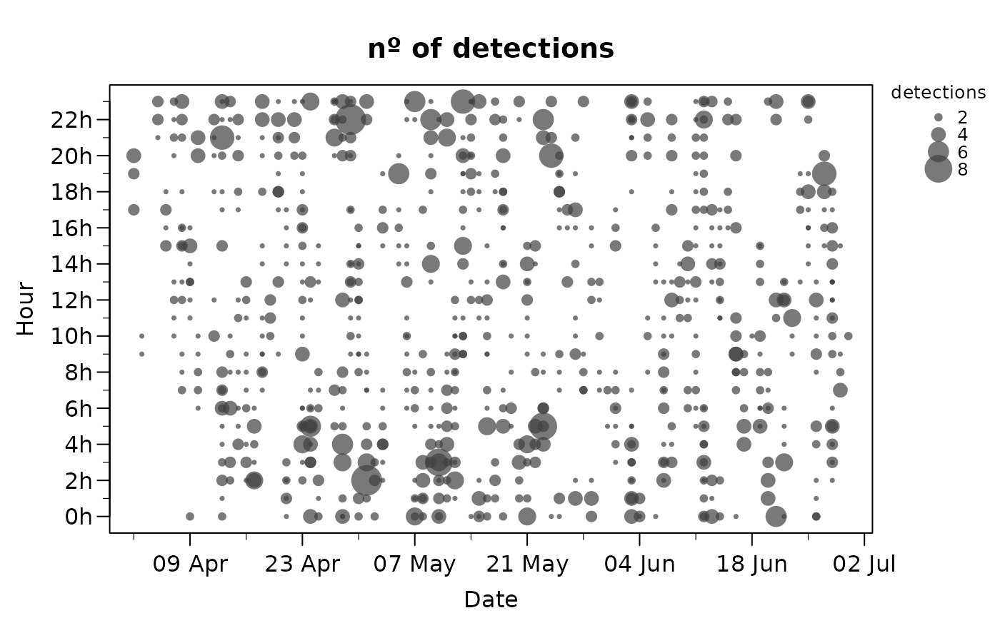

Draws a chronogram: a two-dimensional hour-of-day by date plot of a chosen metric
(number of detections, individuals or co-occurring animals) per time bin. Detections can be shown
as size-coded points (style = "points") or colour-coded raster cells (style = "raster"), with
the diel cycle (dawn / sunrise / sunset / dusk boundaries, and optional day/night/season shading)
overlaid to reveal temporal patterns of habitat use. When split.by is supplied, a separate panel
is drawn for each group (e.g. species).
Usage
plotChronogram(
data,
id.col = NULL,
timebin.col = NULL,
station.col = NULL,
split.by = NULL,
metric = "detections",
style = "points",
color.by = NULL,
color.pal = NULL,
coords = NULL,
solar.depth = 18,
diel.lines = 4,
shade = FALSE,
date.interval = "auto",
date.format = NULL,
date.start = 1,
pt.cex = c(0.5, 3),
alpha = 0.7,
background.color = "white",
grid = TRUE,
grid.color = "white",
highlight.isolated = FALSE,
shared.scale = FALSE,
shared.dates = TRUE,
panel.titles = NULL,
main = NULL,
legend = TRUE,
legend.cols = NULL,
ncol = NULL,
cex = 1,
file = NULL,
width = NULL,
height = NULL,
res = 300,
...
)Arguments
- data
A data frame of detections including a time-bin column (
timebin.col).- id.col
Name of the column containing animal IDs. Defaults to
"ID".- timebin.col
Name of the column containing time bins (in POSIXct format). Defaults to
"timebin".- station.col
Name of the column containing station/receiver IDs. Defaults to
"station".- split.by
Optional column name; when supplied, a separate panel is drawn for each of its levels (e.g. species, life stage, habitat).
- metric
The metric to plot: one of
"detections"(the default),"individuals"or"co-occurrences"(see Details for the co-occurrence definition and its caveats).- style
"points"(metric encoded by point size) or"raster"(metric encoded by colour).- color.by
For
style = "points", a column used to colour the points (factor or numeric).- color.pal
Colours (or a palette function) for the points/raster. If NULL, a colourblind-safe default is used (Okabe-Ito for categorical, viridis for continuous/raster).
- coords
Longitude/latitude (a length-2 numeric, matrix or
SpatialPoints) at which to compute diel-phase times. Required only whendiel.lines > 0orshade = "diel".- solar.depth
Sun angle below the horizon (degrees) defining twilight. Defaults to 18.
- diel.lines
Number of diel-boundary lines to draw: 0, 2 (sunrise/sunset) or 4 (dawn, sunrise, sunset, dusk). Defaults to 4.
- shade
Background shading for
style = "points". One of"diel"(day/night/twilight),"season", FALSE (none, default), or a data frame of custom periods with columnsstartandend(POSIXct or coercible) and, optionally,labelandcolor(same structure asplotAbacus).- date.interval
Date-axis labels:
"auto"(default) for span-appropriate "pretty" breaks, or a numeric value selecting every n-th formatted date (manual mode).- date.format
Date format for the labels (
strftime). If NULL (default), chosen automatically in"auto"mode and defaults to"%d/%b"in manual mode.- date.start
In manual mode, the index of the first labelled date; in
"auto"mode, a phase offset re-anchoring the labels within each period. Defaults to 1.- pt.cex
Length-2 numeric giving the min and max point sizes (
style = "points"). Defaults to c(0.5, 3).- alpha
Opacity of the points, from 0 (transparent) to 1 (opaque). Defaults to 0.7.
- background.color
Background colour (
style = "points", whenshadeis not used).- grid
Logical; draw faint hour/date guide lines. Defaults to TRUE.
- grid.color
Colour of the grid lines. Defaults to "white".
- highlight.isolated
Logical; for
style = "points"withcolor.by, plot isolated colour levels on top so they are not hidden behind denser clusters. Defaults to FALSE.Use a common metric (colour/size) scale across panels. Defaults to FALSE.
Use a common date range across panels. Defaults to TRUE.
- panel.titles
Per-panel title(s). If NULL (default), titles are generated automatically (the group name when
split.byis used, otherwise the metric); a character vector overrides them (recycled across panels); FALSE omits them.- main
Optional overall title above the whole panel grid.
- legend
Logical; draw the legend(s). Defaults to TRUE.
- legend.cols
Number of columns for the
color.bylegend. If NULL, chosen automatically.- ncol
Number of columns in the panel layout. If NULL, panels are stacked (one column).
- cex
Global expansion factor for all plot text. Defaults to 1.
- file
Optional output file. If
NULL(the default), the figure is drawn on the current graphics device - the usual interactive behaviour. If a file path is supplied, moby opens a graphics device chosen from the file extension (.pdf,.svg,.png,.jpg/.jpeg,.tif/.tiffor.bmp), draws the figure to it, and closes the device automatically (also if an error occurs). For multi-page or batch workflows, keepfile = NULLand manage the device yourself (e.g.pdf(...); plot...(); dev.off()).- width, height
Output size in inches. Used only when
fileis supplied. IfNULL(default), a size is derived from the figure's structure (e.g. the number of individuals or panels). These defaults are sensible starting points, not guarantees: dense or unusual figures may still need you to setwidth/heightexplicitly. The two can be set independently.- res
Resolution in pixels per inch, for raster formats only (
.png,.jpg,.tif,.bmp); ignored for vector formats (.pdf,.svg). Used only whenfileis supplied. Defaults to 300.- ...
Further arguments passed to
image(raster) orpoints(points).
Details
Date-axis labels are chosen automatically to suit the temporal span (date.interval = "auto"); a numeric date.interval reverts to manual mode, and date.start shifts the labels (a
phase offset in auto mode). For style = "points", color.by colours points by any variable while
point size encodes the metric; shade shades the diel cycle or seasons in the background.
The "co-occurrences" metric counts the number of distinct individuals sharing the same station
within the same time bin (i.e. the local group size, restricted to cells with two or more animals).
It is therefore an exploratory descriptor whose magnitude is sensitive to the time-bin width and
the spatial resolution of station.col (coarser bins/stations inflate apparent co-occurrence) and
to detection effort; it is not corrected for the number of animals available. For quantitative
co-occurrence/association analysis (with permutation-based null models) use
calculateAssociations.
Note
The right margin is sized from the measured legend width and legends are positioned in inch
units (via grconvertX / grconvertY), so the layout
stays consistent across datasets and graphics devices.
Examples
# chronogram of detections with the diel cycle overlaid
plotChronogram(rays, coords = c(-9, 38.4))
#> Warning: - 'id.col' converted to factor.
#>
#> Chronogram
#> ------------------------------------------------------
#> Individuals: 8
#> Detections: 1,643
#> Period: 2023-04-02 to 2023-06-30 (88 d)
#> Time bin: 60 min
#> Metric: detections
#> Style: points
#> Diel: 4 lines
#> Date axis: auto
#> ------------------------------------------------------
# without the diel overlay (no coordinates required)
plotChronogram(rays, diel.lines = 0)
#> Warning: - 'id.col' converted to factor.
#>
#> Chronogram
#> ------------------------------------------------------
#> Individuals: 8
#> Detections: 1,643
#> Period: 2023-04-02 to 2023-06-30 (88 d)
#> Time bin: 60 min
#> Metric: detections
#> Style: points
#> Diel: off
#> Date axis: auto
#> ------------------------------------------------------
